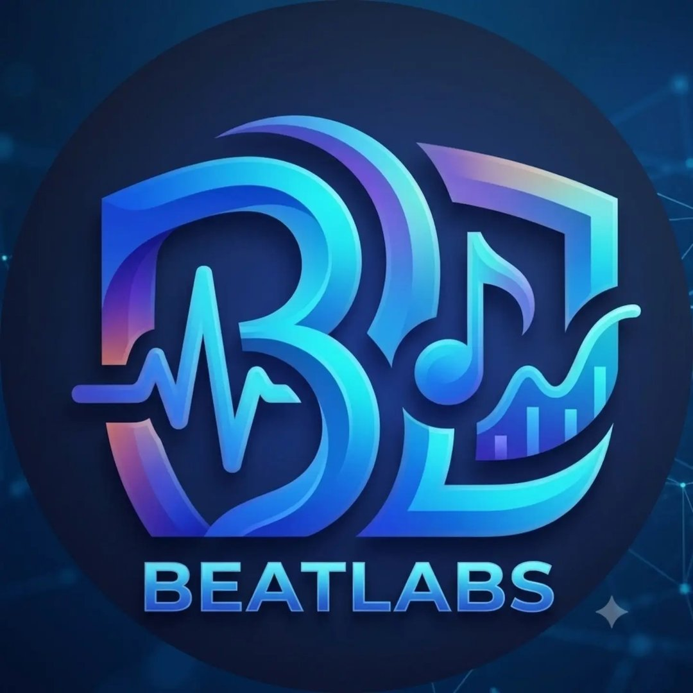

Developer Hub
Connect with the OnyxChat API protocol. Write automations, hook messages, and build secure systems.
OnyxChat Bot Gateway
Build interactive bots that send rich files and structure group chat tasks. OnyxChat leverages WebSockets to process message queues instantly.
All communications are signed using local workspace keys. Our SDK takes care of crypto validations, making integrations simple and secure.
const client = new OnyxClient({ token: 'YOUR_API_TOKEN' });
// Connect to client network
client.on('connect', () => {
console.log('OnyxChat Bot Active!');
});
// Listener for incoming text messages
client.on('message', async (msg) => {
if (msg.content === '!ping') {
await msg.reply('Pong! 🏓');
}
});

Created by BeatLabs
OnyxChat is designed and built by BeatLabs. We specialize in designing and engineering high-end private chat clients, communication modules, and beautiful graphical user interfaces.
Have a question or custom design request? Reach out to us via any of our networks.
 @_beat_labs_
@_beat_labs_